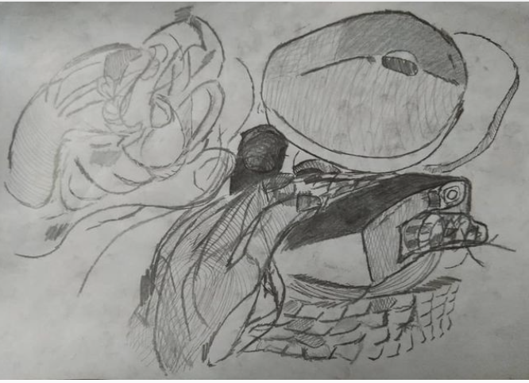

Sinking Lint is a painting demostrating the ineffable destruction of the earth. Almost as if it is a lint roller being used to clean up our mess. The use of a lint roller, much like using a lint roller to clean clothes portrays how material desires use the earth.
I drew this while working on a solution to the Birch Swinnerton - Dyer Conjecture. It was my first time using colouring pencils.
Fred's a young g like me.
This drawing is of the mind and how it can make logic out of disorder and chaos.
Stretch depicts the transition of thought from mind to mouth to hand and elsewhere till eventually outside of you. We stretch our thoughts as far as we can reach.
These are two birds I drew while having a meal at the Yurt Cafe. I do much of my studying there.
These are another two birds I drew at the Yurt Cafe. I drew these to appear much more sinister. Although I was sitting outside at the time.
Skyscraper robot to build what rusts in soil.
This was one of my first proper drawings which I drew while learning to draw. It depicts pollution an the industralisation of the globe.
This is Carl.
This is a digital fairy.
This is an eye I drew when following a tutorial.
My first oil pastel piece, the folds of home depicts the wondering of what makes a home come together.
My fustration with racism, scientific racism and what it means to be black in a world which will not acknowledge your talent on equal footing with your white contemporaries.
I drew this hand which depicts the future of wearable technology.
Holister is a jumper or a robot depending on how you look at it. It is displayed upside down.
This is Hollister displayed the right way around. Take a carful look at both to decide which way you prefer.
Jerome, I drew this while after working on the Birch and Swinnerton Conjecture. It closely resembles a friend of mine.
This drawing deals with my feelings of my aeronautical engineering course being rubbish.
A mech knight, I drew this one really quick, my pencil didn't leave the page apart from the bit at the bottom where there's 3 lines which actually ruins the image considerably, but you wouldn't be able to tell.
This is a fun picture, it reminds me of super mario and mushroom kingdom.
Hey! Those are my nuts!, is saying many things. Firstly it is saying that those nuts (as in fruit) belong to me. Secondly it is saying that the crazy is mine.
A very sexy satellite.
Wizzard encompases the magic of flying and birds. Aircraft on a phallic structure.
Donations are always welcome, click here to donate via paypal.
If you want to contact me regarding any of the work uploaded please email me at jamellsamuels@googlemail.com
jamellsamuels@googlemail.com